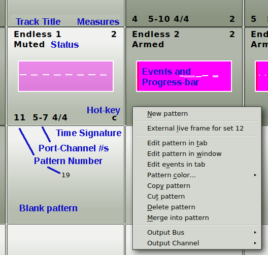

|
The Slot.
Pattern slots are the square buttons in the
Live Grid. Note the following contents of a slot,
if it is not an empty/blank slot:
-
Track Title.
This holds a short title for the slot's track.
-
Measures.
The number of measures of a pattern can be any value.
Usually the patterns are short: 1, 2, 4,
8 ... measures. Whatever the song needs.
-
Status.
Most often, a track is either "Muted" (silent) or
"Armed". Other statuses are "Queued" and
"One-shot", which are explained in the user's manual.
-
Progress Box.
The rectangle in the center of the slot represents
the "color" of the track (if any), the events in
the track, and the progress bar (if armed).
-
Pattern Number.
Each pattern is numbered from 0 to 31.
Pattern numbers vary fastest by row;
unusual, but can be changed. See the user's manual.
-
Port-Channel Numbers.
Each pattern is assigned MIDI port and
output channel numbers.
Ports numbers start at 0;
port names are shown in Edit / Preferences.
Channels go from 1 to 16;
"F" means there's no output channel.
-
Time Signature.
The time signature of the pattern
merely determines how the track looks in the
pattern editor.
-
Right-click Menu.
This menu provides for creating/editing
a pattern (also doable by a double-click or a hot-key).
Patterns can be copied, moved, merged, have a
color shown, etc.
|
|

|
| Slots and Right-Click Menu |
|